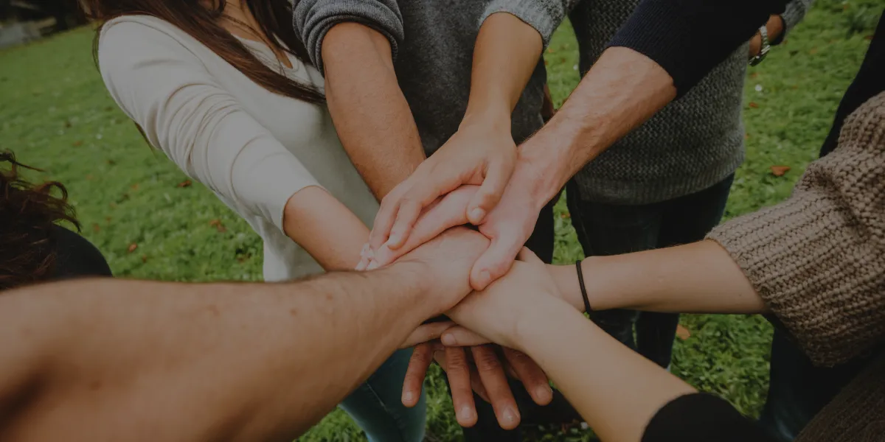
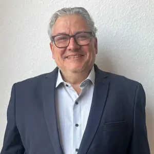
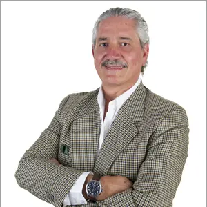
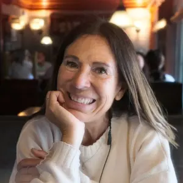
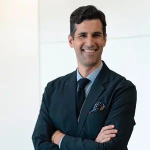
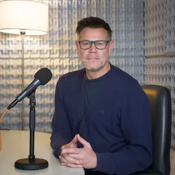

Colabora
Esta es tu oportunidad para formar parte de Avesedari y generar un impacto real.
Formas de colaborar
- Haz una donación
Haz una donación
Tu aportación es un acto de amor que cambia el futuro.
- Saber más sobre cómo hacerte socio
Hazte socio/a
Ser socio es sumar recursos para que nuestros proyectos se concreten y se extiendan a más niñas y niños en situación de multivulnerabilidad.
- Saber más sobre voluntariado
Voluntariado
Comparte tu tiempo, talento y pasión. Con tu ayuda en nuestras actividades y proyectos, podemos llegar más lejos y ayudar a más personas. ¡Cada gesto cuenta!
- Saber más sobre embajadores
Embajadores
Si te apasiona nuestra causa, conviértete en un embajador y ayúdanos a difundir nuestro mensaje. Juntos, podemos ampliar nuestra red y llegar a más corazones.
Voluntariado
Si crees que el aprendizaje de la lectura no solo es un punto de partida para un exitoso rendimiento académico, sino también una buena base para el desarrollo de habilidades socioemocionales que nos permiten un mejor bienestar e inclusión social, nos gustaría tenerte en nuestro equipo como voluntario.
Qué se hace
- Apoyo a actividades de entrenamiento lector en centros educativos y entidades sociales.
- Participación en formaciones específicas para garantizar una intervención de calidad.
- Acompañamiento personalizado a niños y niñas con dificultades lectoras.
Formulario
Embajadores
Dicen por ahí que enseñamos lo que sabemos y contagiamos lo que vivimos.
Nuestros embajadores y embajadoras son compañeros de viaje que transmiten entusiasmo y compromiso allá donde van. Ellos también fueron inspirados por este reto colectivo de transformar realidades y abrir caminos hacia la igualdad de oportunidades.
Con su tarea de difusión, visibilización y creación de conexiones en todo el mundo, nos ayudan a hacer crecer el proyecto. Para Avesedari, su contribución es clave: nos abren puertas, despiertan interés y multiplican el impacto.
Quiero ser embajador/aPENDIENTE Texto de botón nuevo. Falta quién atiende estas solicitudes (D-07).

Pere Francesc Folch i Martínez
Abogado, economista y consultor estratégico con una trayectoria de más de treinta años en banca, inmobiliario, seguros, administración pública y tercer sector.
Leer su mensaje (Pere Francesc Folch i Martínez)
Cada niño merece sentir que puede. Avesedari lo hace posible con una mirada respetuosa, científica y humana hacia las dificultades de aprendizaje. Me sumo como embajador porque creo en una sociedad que no deja a nadie atrás y porque he visto, a lo largo de mi trayectoria, que el apoyo adecuado en el momento adecuado puede cambiar un futuro. Avesedari es ese apoyo.

Edgardo Calvente Farizano
Asesor Estratégico de Avesedari. Consultor, formador y coach, especializado en «Organizaciones No Lucrativas».
Leer su mensaje (Edgardo Calvente Farizano)
Como embajador de Avesedari, me uno con ilusión a una comunidad global que difunde la lectura, la inclusión y la esperanza, conectando cada día oportunidades con sonrisas.

Cristina Salgado Mingo
Orientadora, profesora universitaria, especialista en Audición y Lenguaje.
Leer su mensaje (Cristina Salgado Mingo)
La lectura nos abre los ojos a infinitos mundos asombrosos. Leer para comprender, disfrutar leyendo, leer aprendiendo, crecer sabiendo que hay respuestas a miles de preguntas si buscamos en el libro adecuado. Bonita tarea la del maestro que enseña a leer… y tú ¿recuerdas quién te enseñó a leer?

Carlos Jiménez Cordero
Governance Risk & Compliance Officer corporativo de un grupo empresarial multinacional participante del Pacto Mundial de las Naciones Unidas (UNGC), y miembro de la Junta Directiva Internacional de la World Compliance Association (WCA).
Leer su mensaje (Carlos Jiménez Cordero)
Como embajador es un placer formar parte de la familia GLIFING y un honor contribuir humildemente al noble propósito de AVESEDARI, una asociación sin ánimo de lucro cuya misión y visión me inspiran profundamente. Trabajando para democratizar y mejorar la lectura y la comprensión lectora en los grupos más vulnerables y necesitados de la sociedad estamos fomentando mentes curiosas, críticas y preparadas. Y, desde mi humilde opinión, estos son elementos esenciales para construir sociedades más sostenibles, inclusivas, igualitarias y justas que puedan avanzar libremente en paz y armonía.

José Ferrero
Ingeniero de sistemas, periodista, paisajista, con posgrado en historia del arte.
Leer su mensaje (José Ferrero)
Me llamo José Ferrero, tengo 56 años, soy periodista, escritor y tomé contacto con Glifing y Avesedari a través de Ana Pi, quien me contó sobre la herramienta y los progresos que obtienen aquellas personas que acceden a ella. Crecí sin saber que era disléxico, con lo que ello significó para mí, y encontrar de grande un método que mejora la lectura y todo lo que ello conlleva, me tiene fascinado. Estudié Ingeniería en Sistemas, Periodismo, Paisajismo y un posgrado en Historia del Arte sin saber que todo ese camino podría haberlo transitado con menos miedos, hubiera sido maravilloso. Es por eso que quiero ser un Embajador Avesedari, tal vez pueda ayudar desde mis conocimientos a que este emprendimiento siga creciendo.

Ana Pi Casacuberta
Psicóloga terapeuta con larga experiencia como coordinadora de proyectos en la Fundación Nordelta en Argentina.
Leer su mensaje (Ana Pi Casacuberta)
Cuando vi la deficiencia en la comprensión lectora de los chicos de la Fundación Nordelta cuando estuve trabajando en esta fundación hasta el 2023, me di cuenta de que se agrandaba la brecha de la desigualdad de oportunidades para nuestros chavales, y Valeria, de mi equipo, me habló del método Glifing. Me puse en contacto con Montserrat y le comenté que me encantaría construir un puente entre Barcelona y las Tunas, donde está nuestra Fundación. A los dos minutos me llegó la respuesta de Montserrat Garcia: el puente lo acabas de construir. Desde entonces, la fundación trabaja con el método Glifing gracias a la inestimable colaboración con la Asociación Avesedari y yo soy ahora una embajadora de esta asociación.
PENDIENTE El monográfico lista 4 embajadores y la web, 6.
Empresas
PENDIENTE D-18: falta el contenido de esta sección (qué se ofrece y quién atiende).
Cada colaboración es valiosa.
¿Te sumas a cambiar el mundo con nosotros? ¡Contamos contigo!